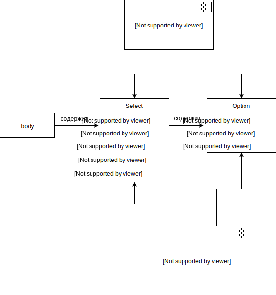

Спрятать/Показать часы
Тег Select
HTML тег Select используется для создания раскрывающегося списка, который появляется при щелчке мышью по элементу формы и позволяет посетителю сайта выбрать один из предопределенных вариантов. Элемент Select может содержать два и более элементов Option, определяющих доступные варианты выбора в раскрывающемся списке. Ширина списка будет определяться самым длинным текстом, указанным в теге Option.
UML-диаграмма

Требования к SPA: в форме необходимо будет ввести данные пользователя, после нажатия кнопки будут появляться часы